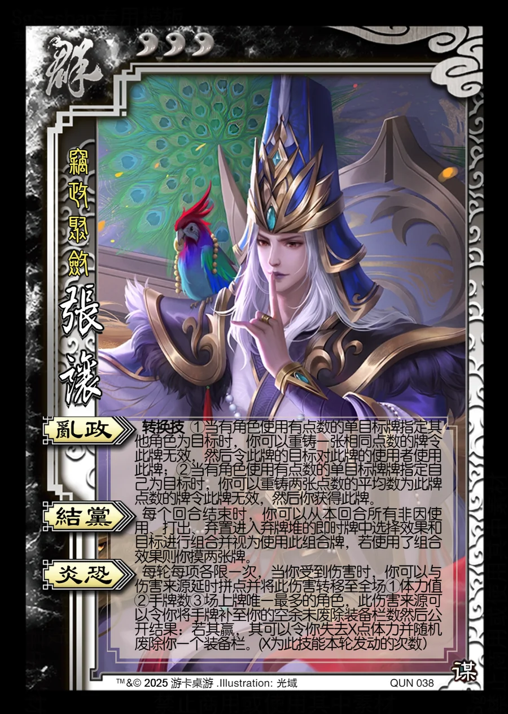

点击卡面查看大图
群
谋张让
♥3窃政聚敛
乱政转换技
转换技 ①当有角色使用有点数的单目标牌指定其他角色为目标时，你可以重铸一张相同点数的牌令此牌无效，然后令此牌的目标对此牌的使用者使用此牌；②当有角色使用有点数的单目标牌牌指定自己为目标时，你可以重铸两张点数的平均数为此牌点数的牌令此牌无效，然后你获得此牌。
结党
每个回合结束时，你可以从本回合所有非因使用、打出、弃置进入弃牌堆的即时牌中选择效果和目标进行组合并视为使用此组合牌，若使用了组合效果则你摸两张牌。
炎恐
每轮每项各限一次，当你受到伤害时，你可以与伤害来源延时拼点并将此伤害转移至全场①体力值②手牌数③场上牌唯一最多的角色，此伤害来源可以令你将手牌补至你的空余未废除装备栏数然后公开结果：若其赢，其可以令你失去X点体力并随机废除你一个装备栏。(X为此技能本轮发动的次数）